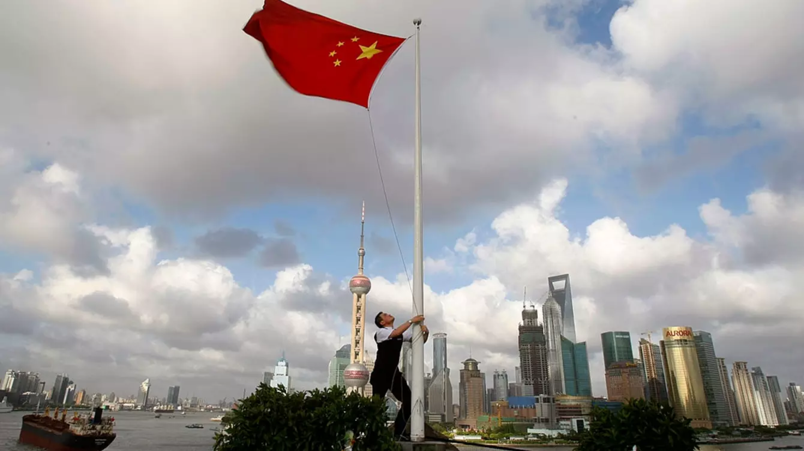

在华跨国企业准备迎接网络监管收紧局面
文章来源:http://www.bbc.com/zhongwen/simp/press-review-40580679
发稿日期:2017/7/12
自今年6月以来，中国对互联网加强了管控。观察人士表示，进一步孤立中国的互联网用户，会妨碍中国实现成为全球性技术强国的抱负。

在华跨国公司正在为与全球互联网的连接被切断做准备。北京方面开始关闭它们访问未经审查外国内容的唯一途径。
最近几周，提供虚拟专用网络(VPN)服务——它可以绕过中国的“防火长城”——的公司的业务被终止或受到限制。
那些依靠VPN服务让员工连接谷歌(Google)提供的电子邮件等服务和未经审查的新闻的外国企业，遭到了一次打击。
香港欧华律师事务所(DLA Piper)的资深律师卡洛琳•比格(Carolyn Bigg)表示，目前国际企业正为中国扩大打压力度做准备。
“企业忽略这些限制措施的时期过去了。当前，环境每周都在变化，”她说。
上周末，最近遭到打压的国际公司苹果(Apple)从自己的中国应用商店里下架了一些热门VPN应用，比如ExpressVPN和Astrill。
自今年6月以来，中国对互联网加强了管控。6月，中国引入了网络安全新规，使政府拥有了对加密和数据出入国境实施合法管控的新权力。
各公司担心，在限制收紧的环境下，它们的员工很快就将无法进行正常的业务操作。
VPN经常用来访问“对企业而言至关重要的境外信息”，北京欧盟商会(The European Chamber of Commerce)的政策经理兰斯•诺布尔(Lance Noble)表示。
中国市场研究集团(CMR)的董事总经理雷小山(Shaun Rein)表示，跨国公司最担心的问题是，“中国的互联网状况不佳，所以它们没法做出正确的商业决定”。
在5月接受欧盟商会商业调查的企业里，几乎一半企业表示，今年中国收紧对互联网的管控对它们的冲击大于往年。超过20%的企业表示，
网络管控给它们造成的损失达到或超过中国市场年度营收的10%。
分析师们表示，中国打压网络自由，部分原因在于当前处于今秋关键的中共党代会之前的敏感时期。那场会议也许将决定中国下一代领导人的阵容。
但外企担心，网络安全新规预示着一种未来限制会趋严的长期趋势。
“包括限制VPN使用在内的最近监管动态，给跨境数据通信带来不确定性，”中国美国商会(American Chamber of Commerce in China)主席蔡瑞德(William Zarit)说。
“开放式交流对创新——这一点对于中国经济发展以及美国公司在中国取得成功是至关重要的——具有促进作用。我们敦促中国政府把这些关切纳入考量。”
有些观察人士也表示，进一步孤立中国的互联网用户，会妨碍中国实现成为全球性技术强国的抱负。
行业内研究人员指出，当各个企业能访问的防火长城之外的资源有限时，要想在人工智能等领域获得领先地位，变得困难得多。
“从技术角度看，长期禁止[VPN]不是解决办法，”中国一家大型技术研究院的一位研究科学家表示。
这次打压也影响到了国际旅行者。两周以前，北京华尔道夫酒店(Waldorf Astoria hotel)给客人发了一封信，
告诉他们，酒店的VPN服务将因“中国的法律问题”而中断，一名给该信拍了照片的客人表示。
今年1月，中国政府在澄清有关跨境互联网连接的现行规定时表示，所有VPN提供商必须取得运营牌照。
VPN提供商也必须保留谁在使用其服务的档案，用户必须仅仅处于商业目的进行VPN连接。
“今年的这一举动，主要目的似乎是阻止公司向中国境内的个人用户（而非企业）提供VPN服务，
”奥睿律师事务所(Orrick Herrington & Sutcliffe)的亚洲管理合伙人王翔说。然而，跨国公司依赖相同的商业VPN服务，
比如ExpressVPN and Astrill。这些公司也为个人用户提供服务。
今年，中国新闻出版总署前署长柳斌杰告诉英国《金融时报》，从长远看，防火长城将没有可行性。
但北京的历史学家章立凡说，他预计收紧趋势将是永久性的。
“这是一条没有回头路的单向车道，”他说，“当局知道自己坐在火山口上，不能挪开位置。”
路易丝•卢卡斯(Louise Lucas)香港、Yingzhi Yang和Xinning Liu北京补充报道
译者/何黎